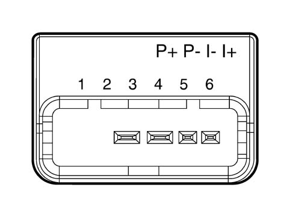
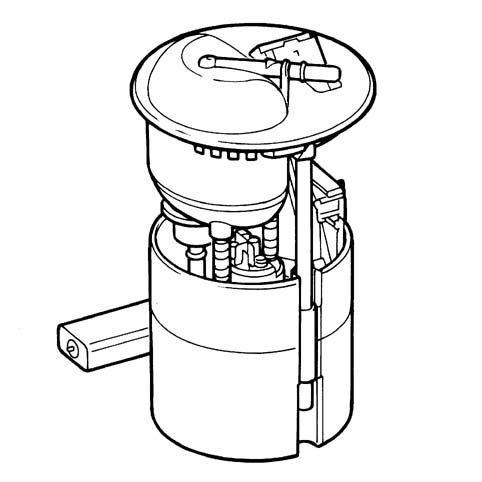

1040AC FUEL LEVEL GAUGE CHECK
- Path
- Test > 10 ENGINE UNIT > 1040 FUEL TANK AND PIPES > 1040A FUEL TANK AND COMPONENTS > 1040AC FUEL LEVEL GAUGE CHECK
- Kind
- test / check procedure
- Applies to
- all engines; all production periods
- Interactive page
- https://sloeber94.github.io/elrnDB-fPnd/en/#/169000774
Applies to: all engines; all production periods
- Disconnect the connection from the fuel intake assembly.
- Connect using an Examiner in Ohmmeter mode to the connection for the fuel intake assembly at pins 5 and 6
- Read a resistance proportional to the level of the fuel as illustrated in the table below:
Fuel level in the tank | Resistance value |
|---|---|
Full tank | 33±3 Ohm |
3/4 | 76±3 Ohm |
1/2 | 134±3 Ohm |
1/4 | 206±3 Ohm |
Reserve | 235±3 Ohm |
Empty | 299±3 Ohm |

Fuel pump assembly pin out

Fuel pump assembly